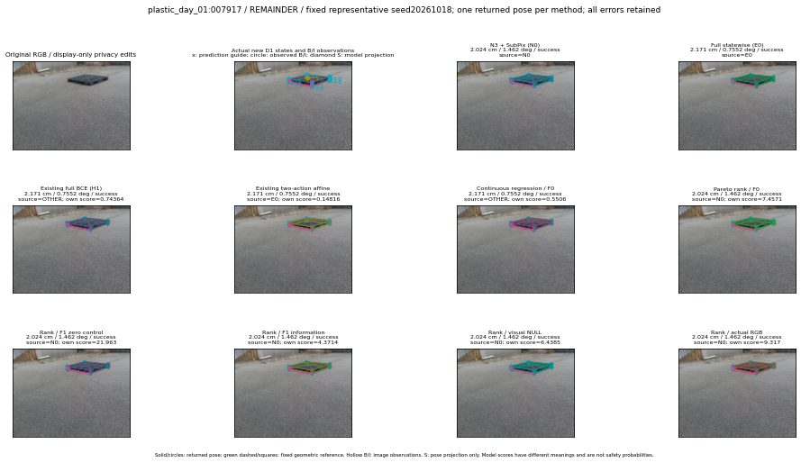

실선은 반환 자세, 초록 점선은 고정 기하 참조입니다. S는 영상 관측이 아닙니다. 점수는 모델별 의미가 다르며 보정된 안전 확률이 아닙니다. 개인정보 처리는 표시 사본에만 적용했습니다.
| 방법·seed | 위치 / 회전 / 공동성공 | 실제 출처 | 선택 후보 | 각 모델 자체 점수 |
|---|---|---|---|---|
| N0 | 2.024 cm / 1.462 deg / success | N0 | N/A | N/A |
| E0 | 2.171 cm / 0.7552 deg / success | E0 | N/A | N/A |
| E0_REGENERATED | 2.171 cm / 0.7552 deg / success | E0 | E0_REGENERATED | N/A |
| POSEFIX_SUBPIX_PF_ANCHOR | 2.026 cm / 1.464 deg / success | OTHER | N/A | N/A |
| POSEFIX_SUBPIX_YOLO_ANCHOR | 2.026 cm / 1.464 deg / success | OTHER | N/A | N/A |
| D1_H1_MLP_s20261018 | 2.171 cm / 0.7552 deg / success | OTHER | G13/ORIGINAL_WD/endpoint/33 | 0.7436449527740479 |
| D1_H1_MLP_s20261019 | 2.171 cm / 0.7552 deg / success | OTHER | G13/ORIGINAL_WD/endpoint/33 | 0.6091011166572571 |
| D1_H1_MLP_s20261020 | 2.171 cm / 0.7552 deg / success | OTHER | G13/ORIGINAL_WD/endpoint/33 | 0.2699512243270874 |
| D1_H1_PAIR_MLP_s20261018 | 2.171 cm / 0.7552 deg / success | E0 | E0_REGENERATED | -0.544780433177948 |
| D1_H1_PAIR_MLP_s20261019 | 2.024 cm / 1.462 deg / success | N0 | N0 | -0.45180460810661316 |
| D1_H1_PAIR_MLP_s20261020 | 2.024 cm / 1.462 deg / success | N0 | N0 | -0.02690916508436203 |
| D1_H1_PAIR_ROLE_AFFINE_s20261018 | 2.171 cm / 0.7552 deg / success | E0 | E0_REGENERATED | 0.14816223084926605 |
| D1_H1_PAIR_ROLE_AFFINE_s20261019 | 2.171 cm / 0.7552 deg / success | E0 | E0_REGENERATED | 0.06518537551164627 |
| D1_H1_PAIR_ROLE_AFFINE_s20261020 | 2.171 cm / 0.7552 deg / success | E0 | E0_REGENERATED | 0.048914358019828796 |
| R_CONT_F0_s20261018 | 2.171 cm / 0.7552 deg / success | OTHER | G13/ORIGINAL_WD/endpoint/33 | 0.5506030321121216 |
| R_CONT_F0_s20261019 | 2.024 cm / 1.462 deg / success | N0 | N0 | 0.5621399283409119 |
| R_CONT_F0_s20261020 | 2.171 cm / 0.7552 deg / success | OTHER | G13/ORIGINAL_WD/endpoint/33 | 0.6289337873458862 |
| R_ORDER_F0_s20261018 | 2.024 cm / 1.462 deg / success | N0 | N0 | 7.457129001617432 |
| R_ORDER_F0_s20261019 | 2.024 cm / 1.462 deg / success | N0 | N0 | 7.378829002380371 |
| R_ORDER_F0_s20261020 | 2.171 cm / 0.7552 deg / success | OTHER | G13/ORIGINAL_WD/endpoint/33 | 2.4498870372772217 |
| R_ORDER_F1_ZERO_s20261018 | 2.024 cm / 1.462 deg / success | N0 | N0 | 21.96263313293457 |
| R_ORDER_F1_ZERO_s20261019 | 2.171 cm / 0.7552 deg / success | OTHER | G13/ORIGINAL_WD/endpoint/33 | 15.374007225036621 |
| R_ORDER_F1_ZERO_s20261020 | 2.171 cm / 0.7552 deg / success | OTHER | G13/ORIGINAL_WD/endpoint/33 | 11.896269798278809 |
| R_ORDER_F1_s20261018 | 2.024 cm / 1.462 deg / success | N0 | N0 | 4.371396064758301 |
| R_ORDER_F1_s20261019 | 2.024 cm / 1.462 deg / success | N0 | N0 | 8.829607009887695 |
| R_ORDER_F1_s20261020 | 2.024 cm / 1.462 deg / success | N0 | N0 | 3.9864840507507324 |
| V_ORDER_NULL_s20261018 | 2.024 cm / 1.462 deg / success | N0 | N0 | 6.438544750213623 |
| V_ORDER_NULL_s20261019 | 2.024 cm / 1.462 deg / success | N0 | N0 | 4.278341293334961 |
| V_ORDER_NULL_s20261020 | 2.171 cm / 0.7552 deg / success | OTHER | G13/ORIGINAL_WD/endpoint/33 | 4.928968906402588 |
| V_ORDER_RGB_s20261018 | 2.024 cm / 1.462 deg / success | N0 | N0 | 9.316969871520996 |
| V_ORDER_RGB_s20261019 | 2.024 cm / 1.462 deg / success | N0 | N0 | 4.0883307456970215 |
| V_ORDER_RGB_s20261020 | 2.024 cm / 1.462 deg / success | N0 | N0 | -2.8633387088775635 |